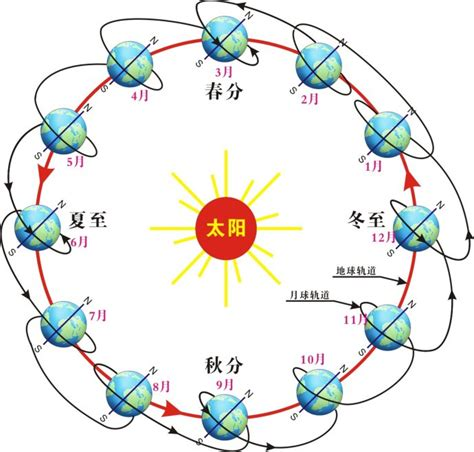
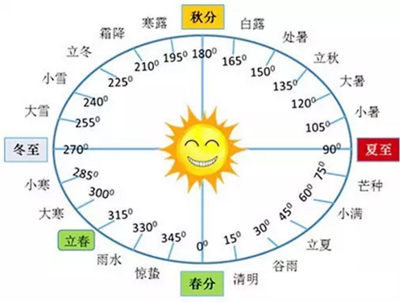
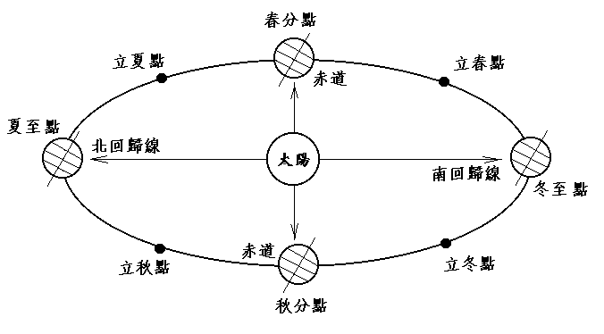
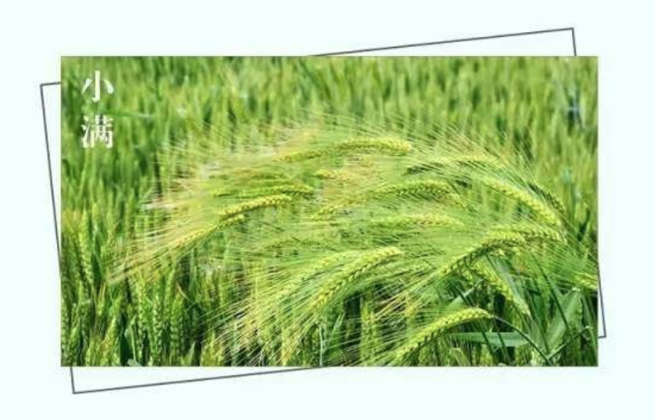
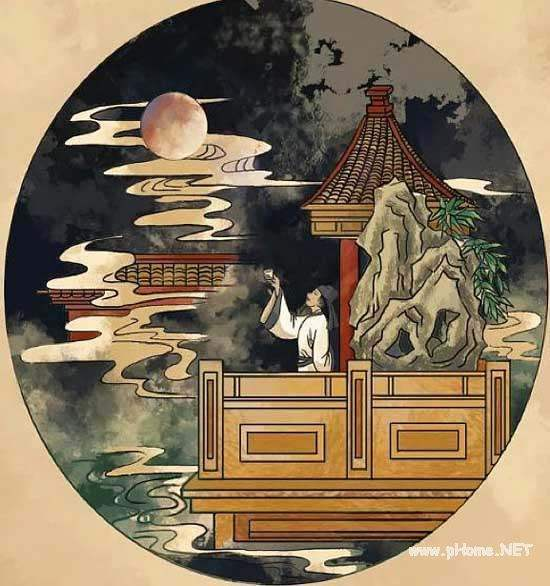
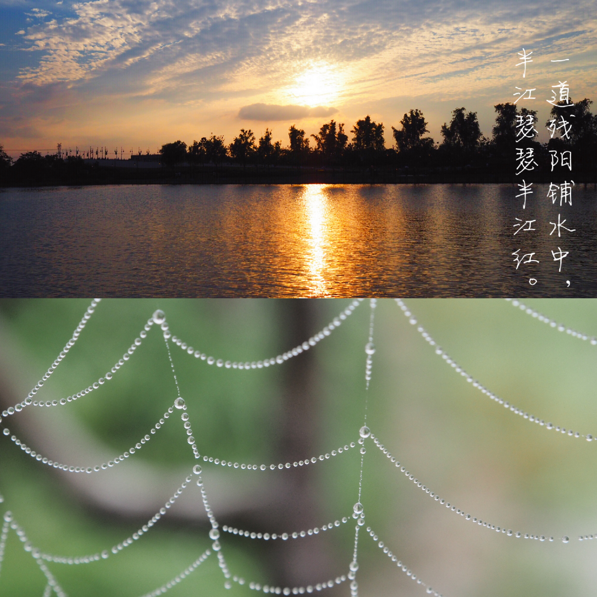

二十四节气
世界非遗： 中国传统 - 二十四节气

什么是二十四节气
《二十四节气歌》
春雨惊春清谷天，夏满芒夏暑相连。
秋处露秋寒霜降，冬雪雪冬小大寒。
每月两节不变更，最多相差一两天。
上半年来六廿一，下半年是八廿三。
- “二十四节气”是中国古人通过观察太阳周年运动，认知一年中时令、气候、物候等方面变化规律所形成的知识体系。
- 中国古人将太阳周年运动轨迹划分为24等份，每一等份为一个“节气”，统称“二十四节气”。
- 它不仅是农耕社会人们生产生活的重要指南，它也体现了中国人对自然时序的一颗敬畏之心。
中国的第五大发明
- 在国际气象界，这一时间认知体系被誉为“中国的第五大发明”。
- 2016年“二十四节气”被正式列入联合国教科文组织人类非物质文化遗产代表作名录。
- 随着中国城市化进程加快和现代化农业技术的发展，“二十四节气”对于农事的指导功能逐渐减弱。
- 为了保护“二十四节气”，我们需要吸引更多的年轻人加入到传承与保护的行列中来，激发其积极性和自觉性，使“二十四节气”这一重要的文化遗产在当代社会文化生活中焕发出新的活力。
二十四节气的来历

- 二十四节气起源于黄河流域。
- 远在春秋时代，就定出仲春、仲夏、仲秋和仲冬等四个节气。秦汉年间，二十四节气已完全确立。
- 现在世界通行的历法是阳历，阳历根据地球绕太阳公转一周所需时间计算，
- 这一周一共是 365 天 5 小时 48 分 46 秒，为方便以365 天做为一年，
- 每隔四年设一个闰月，使原本 28 天的二月增加为 29 天。

- 华人更多采用“农历”，“农历”又称“阴历”，是我国民间传统节令，是中华民族古老文明和智慧的结晶。
- 阴历则是以月亮的圆缺变化周期作为计算单位，这个周期大致是 29 天 12 小时 44 分 4 秒左右，因此大月30天，小月29天，
- 真正的阴历一年只有 354 天，比阳历少 11 天，为了使它能够符合天气冷热变化的周期，每隔二年或是三年就得多增加一个月，称为“闰月”。

- 古代天文学家早在周朝和春秋时代就用“土圭”测日影法来确定春分、夏至、秋分、冬至，
- 并根据一年内太阳在黄道（即地球绕太阳公转的轨道）上的位置变化和引起的地面气候的演变次序，将全年平分为二十四等份。

- 太阳从春分点（黄经零度，此刻太阳垂直照射赤道）出发，每前进15度为一个节气；
- 运行一周又回到春分点，为一回归年，合360度，因此分为24个节气。

- 春分和秋分昼夜平分，夏至昼最长（北半球，下同），冬至昼最短，
- 春分、秋分、夏至和冬至是古人最初确立的气。其后加入的是立春、立夏、立秋和立冬。
2019年二十四节气准确时间

二十四节气的说明
- 立春：每年的2月4日或5日，谓春季开始之节气。
春节

《元日》宋 - 王安石
爆竹声中一岁除，春风送暖入屠苏。
千门万户曈曈日，总把新桃换旧符。
- 雨水：每年的2月19日或20日，此时冬去春来，气温开始回升，空气湿度不断增大，但冷空气活动仍十分频繁。
元宵节
《春夜喜雨》唐 - 杜甫
好雨知时节，当春乃发生。
随风潜入夜，润物细无声。
野径云俱黑，江船火独明。
晓看红湿处，花重锦官城。
- 惊蛰：每年的3月5日或6日，指的是冬天蛰伏土中的冬眠生物开始活动。惊蛰前后乍寒乍暖，气温和风的变化都较大。
二月二，龙抬头。
《村居》清 - 高鼎
草长莺飞二月天，拂堤杨柳醉春烟。
儿童散学归来早，忙趁东风放纸鸢。
- 春分：每年的3月20日或21日，太阳位于黄经0度，阳光直照赤道，昼夜几乎等长。我国广大地区越冬作物将进入春季生长阶段。
《咏柳》唐 - 贺知章
碧玉妆成一树高，万条垂下绿丝绦。
不知细叶谁裁出，二月春风似剪刀。
- 清明：每年的4月4日或5日，气温回升，天气逐渐转暖。

清明节
《清明》唐 - 杜牧
清明时节雨纷纷，路上行人欲断魂。
借问酒家何处有，牧童遥指杏花村。
- 谷雨：每年的4月20日或21日，雨水增多，利于谷类生长。
《春晓》 唐 - 孟浩然
春眠不觉晓，处处闻啼鸟。
夜来风雨声，花落知多少。
- 立夏：每年的5月5日或6日，万物生长，欣欣向荣。
《夏日田园杂兴 其一》宋 - 范成大
梅子金黄杏子肥，麦花雪白菜花稀。
日长篱落无人过，唯有蜻蜓蛱蝶飞。
- 小满：每年的5月21日或22日，麦类等夏熟作物此时颗粒开始饱满，但未成熟。

《小池》宋 - 杨万里
泉眼无声惜细流，树阴照水爱晴柔。
小荷才露尖尖角，早有蜻蜓立上头。
- 芒种：每年的6月5日或6日，此时太阳移至黄经75度。麦类等有芒作物已经成熟，可以收藏种子。
端午节
《约客》南宋 - 赵师秀
黄梅时节家家雨，青草池塘处处蛙。
有约不来过夜半，闲敲棋子落灯花。
- 夏至：每年的6月21日或22日，太阳位于黄经90度，日光直射北回归线，出现“日北至，日长至，日影短至”，故曰“夏至”。
《竹枝词》唐 - 刘禹锡
杨柳青青江水平，闻郎江上唱歌声。
东边日出西边雨，道是无晴却有晴。
- 小暑：每年的7月7日或8日，入暑，标志着我国大部分地区进入炎热季节。
吃西瓜
- 大暑：每年的7月22日或23日，正值中伏前后。这一时期是我国广大地区一年中最炎热的时期，但也有反常年份，“大暑不热”，雨水偏多。
《晓出净慈寺送林子方》南宋 - 杨万里
毕竟西湖六月中，风光不与四时同。
接天莲叶无穷碧，映日荷花别样红。
- 立秋：每年的8月7日或8日，草木开始结果，到了收获季节。
七夕节
《乞巧》唐 - 林杰
七夕今宵看碧霄，牵牛织女渡河桥。
家家乞巧望秋月，穿尽红丝几万条。
- 处暑：每年的8月23日或24日，“处”为结束的意思，至暑气即将结束，天气将变得凉爽了。由于正值秋收之际，降水十分宝贵。
- 白露：每年的9月7日或8日，由于太阳直射点明显南移，各地气温下降很快，天气凉爽，晚上贴近地面的水气在草木上结成白色露珠，由此得名“白露”。
中秋节

《水调歌头》宋 - 苏轼
明月几时有，把酒问青天。
不知天上宫阙，今夕是何年？
我欲乘风归去，又恐琼楼玉宇，高处不胜寒。
起舞弄清影，何似在人间！
转朱阁，低绮户，照无眠。
不应有恨，何事长向别时圆？
人有悲欢离合，月有阴晴圆缺，此事古难全。
但愿人长久，千里共婵娟。
- 秋分：每年的9月23日或24日，太阳位于黄经180度，日光直射点又回到赤道，形成昼夜等长。
- 寒露：每年的10月8日或9日。此时太阳直射点开始向南移动，北半球气温继续下降，天气更冷，露水有森森寒意，故名为“寒露风”。
重阳节

《暮江吟》唐 - 白居易
一道残阳铺水中，半江瑟瑟半江红。
可怜九月初三夜，露似真珠月似弓。
- 霜降：每年的10月23日或24日，黄河流域初霜期一般在10月下旬，与“霜降”节令相吻合，霜对生长中的农作物危害很大。
《山行》唐 - 杜牧
远上寒山石径斜，白云生处有人家。
停车坐爱枫林晚，霜叶红于二月花。
- 立冬：每年的11月7日或8日，冬季开始。
- 小雪：每年的11月22日或23日，北方冷空气势力增强，气温迅速下降，降水出现雪花，但此时为初雪阶段，雪量小，次数不多，黄河流域多在“小雪”节气后降雪。
- 大雪：每年的12月7日或8日。此时太阳直射点快接近南回归线，北半球昼短夜长。
《江雪》唐 - 柳宗元
千山鸟飞绝，万径人踪灭。
孤舟蓑笠翁，独钓寒江雪。
- 冬至：每年的12月22日或23日，太阳位于黄经270度，此时太阳几乎直射南回归线，北半球则形成了日南至、日短至、日影长至，成为一年中白昼最短的一天。冬至以后北半球白昼渐长，气温持续下降，并进入年气温最低的“三九”。
冬至吃什么？
《九九歌》
一九二九不出手，三九四九冰上走；
五九六九，沿河看柳；
七九河开，八九燕(雁)来；
九九加一九，耕牛遍地走。
- 小寒：每年的1月5日或6日，此时气候开始寒冷。
腊八节
《春节童谣》
小孩小孩你别馋，
过了腊八就是年；
腊八粥，喝几天，
哩哩啦啦二十三；
二十三，糖瓜粘；
二十四，扫房子；
二十五，磨豆腐；
二十六，去买肉；
二十七，宰公鸡；
二十八，把面发；
二十九，蒸馒头；
三十晚上熬一宿，
大年初一扭一扭。
- 大寒：每年的1月20日或21日，数九严寒，一年中最寒冷的时候。
小年
过大年
二十四节气歌
春分秋分昼夜平分，夏至昼长冬至昼短。
春雨惊春清谷天，夏满芒夏暑相连。
秋处露秋寒霜降，冬雪雪冬小大寒。